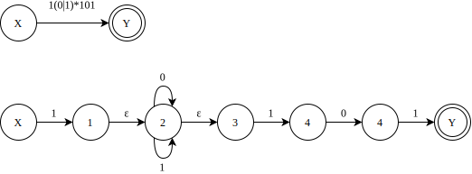
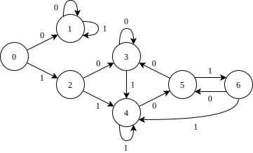
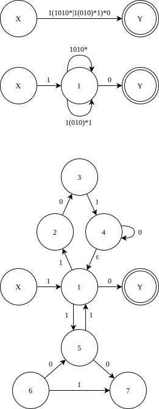
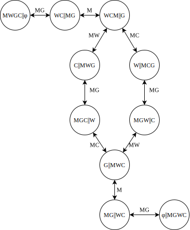

编译原理作业
01 第二章作业
P36: 6, 7, 8, 9, 10, 11 (22/3/8)
6. 令文法 G6 为
\[ \begin{split} & N \to D | ND \\ & D \to 0 | 1 | 2 | 3 | 4 | 5 | 6 | 7 | 8 | 9 \end{split} \]
(1) G6 的语言 L(G6) 是什么?
(2) 给出句子 0127, 34 和 568 的最左推导和最右推导.
解: (1) L(G6) 是由 0 ~ 9 十个数字构成的任意长度 (大于 0) 的字符串.
(2) 最左推导:
\[ \begin{align} & N \Rightarrow ND \Rightarrow NDD \Rightarrow NDDD \Rightarrow DDDD \Rightarrow 0DDD \Rightarrow 01DD \Rightarrow 012D \Rightarrow 0127 \\ & N \Rightarrow ND \Rightarrow DD \Rightarrow 3D \Rightarrow 34 \\ & N \Rightarrow ND \Rightarrow NDD \Rightarrow DDD \Rightarrow 5DD \Rightarrow 56D \Rightarrow 568 \end{align} \]
最右推导:
\[ \begin{align} & N \Rightarrow ND \Rightarrow N7 \Rightarrow ND7 \Rightarrow ND27 \Rightarrow N127 \Rightarrow D127 \Rightarrow 0127 \\ & N \Rightarrow ND \Rightarrow N4 \Rightarrow D4 \Rightarrow 34 \\ & N \Rightarrow ND \Rightarrow N8 \Rightarrow ND8 \Rightarrow N68 \Rightarrow D68 \Rightarrow 568 \end{align} \]
7. 写一个文法, 使其语言是奇数集, 且每个奇数不以 0 开头.
解: 文法 G(S):
\[ \begin{split} & S \to O | AO \\ & O \to 1 | 3 | 5 | 7 | 9 \\ & A \to AD | N \\ & N \to 2 | 4 | 6 | 8 | O \\ & D \to 0 | N \\ \end{split} \]
8. 令文法为
\[ \begin{split} & E \to T | E + T | E - T \\ & T \to F | T * F | T / F \\ & F \to (E) | \text{i} \\ \end{split} \]
(1) 给出 i + i * i, i * (i + i) 的最左推导和最右推导;
(2) 给出 i + i + i, i + i * i 和 i - i - i 的语法树.
解:
(1) 最左推导:
i + i * i:
\( \begin{split} E & \Rightarrow E + T \Rightarrow T + T \Rightarrow F + T \Rightarrow i + T \Rightarrow i + T * F \Rightarrow i + F * F \Rightarrow i + i * i \end{split} \)
i * (i + i):
\( \begin{split} E & \Rightarrow T \Rightarrow T * F \Rightarrow F * F \Rightarrow i * F \Rightarrow i * (E) \Rightarrow i + (E + T) \Rightarrow i + (T + T) \Rightarrow i * (F + F) \Rightarrow i * (i + i) \end{split} \)
最右推导:
i + i * i:
\( \begin{split} E & \Rightarrow E + T \Rightarrow E + T * F \Rightarrow E + F * i \Rightarrow E + i * i \Rightarrow T + i * i \Rightarrow F + i * i \Rightarrow i + i * i \end{split} \)
i * (i + i):
\( \begin{split} E & \Rightarrow T \Rightarrow T * F \Rightarrow F * F \Rightarrow F * (E) \Rightarrow F * (E + T) \Rightarrow F * (E + F) \Rightarrow F * (E + i) \\ & \Rightarrow F * (T + i) \Rightarrow F * (F + i) \Rightarrow F * (i + i) \Rightarrow i * (i + i) \end{split} \)
(2)
| i + i + i | i + i * i | i - i - i |
|---|---|---|
9. 证明下面的文法是二义的:
\[ S \to iSeS | iS | i \]
证: 对于句子 iiiei 有两个语法树
\[ \begin{align} & S \Rightarrow iSeS \Rightarrow iSei \Rightarrow iiSei \Rightarrow iiiei \\ & S \Rightarrow iS \Rightarrow iiSeS \Rightarrow iiSei \Rightarrow iiiei \end{align} \]
10. 把下面文法改写为无二义的:
\[ S \to SS | (S) | () \]
解: \[ \begin{split} & S \to TS | T \\ & T \to (S) | () \end{split} \]
11. 给出下面语言的相应文法
\[ \begin{align} L_1 & = \{a^n b^n c^i | n \geq 1, i \geq 0\} \\ L_2 & = \{a^i b^n c^n | n \geq 1, i \geq 0\} \\ L_3 & = \{a^n b^n a^m b^m | n, m \geq 0 \} \\ L_4 & = \{1^n 0^m 1^m 0^n | n, m \geq 0 \} \\ \end{align} \]
解:
L1:
\( \begin{split} & S \to AC \\ & A \to aAb | ab \\ & C \to Cc | \varepsilon \end{split} \)
L2:
\( \begin{split} & S \to AB \\ & A \to aA | \varepsilon \\ & B \to bBc | bc \end{split} \)
L3:
\( \begin{split} & S \to AB \\ & A \to aAb | \varepsilon \\ & B \to aBb | \varepsilon \end{split} \)
L4:
\( \begin{split} & S \to A | B \\ & A \to 1B0 | A \\ & B \to 0B1 | \varepsilon \end{split} \)
作业 02 - 第三章作业
- P64: 7, 8, 12, 14 (22/3/22) 作业下一次课讲完后，才能做
- P64: 7, 8, 10 (22/3/29)
- P64: 12, 14 (22/4/12)
7. 构造下列正规式相应的 DFA
1(0|1)*101
1(1010*|1(010)*1)*0
0*10*10*10*
(00|11)*((01|10)(00|11)*(01|10)(00|11)*)*
解:
(1)

确定化:
| I | I0 | I1 | K | 0 | 1 |
|---|---|---|---|---|---|
| {X} | φ | {1, 2, 3} | 0 | 1 | 2 |
| φ | φ | φ | 1 | 1 | 1 |
| {1,2,3} | {2,3} | {2,3,4} | 2 | 3 | 4 |
| {2,3} | {2,3} | {2,3,4} | 3 | 3 | 4 |
| {2,3,4} | {2,3,5} | {2,3,4} | 4 | 5 | 4 |
| {2,3,5} | {2,3} | {2,3,4,Y} | 5 | 3 | 6 |
| {2,3,4,Y} | {2,3,5} | {2,3,4} | 6 | 5 | 4 |

由状态子集转换矩阵可知, 状态 2 和 3 是等价的, 而状态 4 和 6 是等价的. 因此,合并等价状态之后只剩下 5 个状态, 也即是最少状态的 DFA.
(2) 构造正规表达式的 NFA

8. 给出下面正规表达式:
(1) 以 01 结尾的二进制数串;
(2) 能被5整除的十进制整数;
(3) 包含奇数个 1 或奇数个 0 的二进制数串;
(4) 英文字母组成的所有符号串, 要求符号串中的字母依照字典序排列;
(5) 没有重复出现的数字的数字符号串的全体;
(6) 最多有一个重复出现的数字的数字符号串的全体;
(7) 不包含子串 abb 的由 a 和 b 组成的符号串的全体.
解:
(1) (0|1)*01
(2) (1|2|3|4|5|6|7|8|9)(0|1|2|3|4|5|6|7|8|9)*(0|5)|(0|5)
(3) 由奇数个 1 的二进制数串可表示为 1(11)*, 向其中填入 0 可得 0*1(0*|10*1)*;
同理可得, 奇数 0 的二进制数串可表示为 1*0(1*|01*0)*.
综上, 包含奇数个 1 或奇数个 0 的二进制数串的正规表达式为 0*1(0*|10*1)*|1*0(1*|01*0)*.
(4) a*b*c* ... x*y*z*
10. 一个人带着狼, 山羊和白菜在一条河的左岸. 有一条船, 大小正好能装下这个人和其它三件东西中的一件. 人和他的随行物都要过到河的右岸. 人每次只能将一件东西摆渡过河. 但若人将狼和羊留在同一岸而无人照顾的话, 狼将把羊吃掉. 类似地, 若羊和白菜留下来无人照看, 羊将会吃掉白菜. 请问是否有可能渡过河去, 使得羊和白菜都不被吃掉? 如果可能, 请用有限自动机写出渡河的方法.
解:
令人=M, 狼=W, 山羊=G, 白菜=C. 字符集为每次渡河的成员, 故 Σ={M, MW, MG, MC}.
状态集为河边和对岸的情况, 用双竖线表示河. 因此, 开始状态为: MWGC || φ, 接受状态为: φ || MWGC.
DFA图如下:

12. 将图 3.18 的 (a) 和 (b) 分别确定化和最少化.
 |
 |
| (a) | (b) |
图 3.18 有限自动机 (a) 零确定化的有限自动机; (b) 需最小化的有限自动机
14. 构造一个 DFA, 它接受 \(\Sigma = \{0, 1\}\) 上所有满足如下条件的字符串: 每个 1 都有 0 直接跟在右边.
作业 03 - 第四章作业
(22/4/19) 其中第二题的第三问，等下次课后再做
1. 考虑下面文法 G1:
\[ \begin{align} & S \to a | \land | (T) \\ & T \to T, S | S \end{align} \]
(1) 消去 G1 的左递归. 然后, 对每个非终结符, 写出不带回溯的递归子程序.
(2) 经改写后的文法是否是 LL(1) 的? 给出它的预测分析表.
解:
(1) G1': \[ \begin{align} & S \to a | \land | (T) \\ & T \to ST' \\ & T' \to ,ST' | \varepsilon \end{align} \]
PROCEDURE S;
BEGIN
IF SYM = 'a' OR SYM = '∧' THEN ADVANCE;
ELSE IF SYM = '(' THEN
BEGIN
ADVANCE;
T;
IF SYM = ')' THEN ADVANCE
ELSE ERROR
END
ELSE ERROR
END
PROCEDURE T;
BEGIN
S;T'
END
PROCEDURE T';
BEGIN
IF SYM = ',' THEN
BEGIN
ADVANCE;
S;T'
END
END
其中 SYM 是输入串指针 IP 所指的符号;
ADVAMCE 是把 IP 调至下一个输入符号;
ERROR 是出错诊察程序.
(2)
| 非终结符 | FIRST | FOLLOW |
|---|---|---|
| S | {a, ∧, (} | {#, ,, )} |
| T | {a, ∧, (} | {)} |
| T' | {,, ε} | {)} |
预测分析表
a | ∧ | ( | ) | , | # | |
|---|---|---|---|---|---|---|
| S | S→a | S→∧ | S→(T) | |||
| T | T→ST' | T→ST' | T→ST' | |||
| T' | T'→ε | T'→,ST' |
构造的预测分析表中没有多重入口, 所以修改后的 G1' 是 LL(1) 文法.
2. 对下面的文法 G:
\[ \begin{align} & E \to TE' \\ & E' \to +E | \varepsilon \\ & T \to FT' \\ & T' \to T | \varepsilon \\ & F \to PF' \\ & F' \to *F' | \varepsilon \\ & P \to (E) | a | b | \land \\ \end{align} \]
(1) 计算这个文法的每个非终结符的 FIRST 和 FOLLOW.
(2) 证明这个文法是 LL(1) 的.
(3) 构造它的预测分析表.
(4) 构造它的递归下降分析程序.
解:
(1)
| 非终结符 | FIRST | FOLLOW |
|---|---|---|
| E | {(, a, b, ∧} | {#, )} |
| E' | {+, ε} | {#, )} |
| T | {(, a, b, ∧} | {+, ), #} |
| T' | {(, a, b, ∧, ε} | {+, ), #} |
| F | {(, a, b, ∧} | {(, a, b, ∧, +, ), #} |
| F' | {*, ε} | {(, a, b, ∧, +, ), #} |
| P | {(, a, b, ∧} | {*, (, a, b, ∧, +, ), #} |
(2) 考虑下列产生式:
\[ \begin{align} & E' \to +E | \varepsilon \\ & T' \to T | \varepsilon \\ & F' \to *F' | \varepsilon \\ & P \to (E) | a | b | \land \\ \end{align} \]
\[ \begin{align} FIRST(+E) \cap FIRST ( \varepsilon ) & = \{ + \} \cap \{ \varepsilon \} = \phi \\ FIRST(+E) \cap FOLLOW(E') & = \{ + \} \cap \{\text{#}, )\} = \phi \\ FIRST(T) \cap FIRST ( \varepsilon ) & = \{ (, a, b, \land \} \cap \{ \varepsilon \} = \phi \\ FIRST(T) \cap FOLLOW(T') & = \{ (, a, b, \land \} \cap \{ +, ), \text{#} \} = \phi \\ FIRST(*F') \cap FIRST ( \varepsilon ) & = \{ * \} \cap \{ \varepsilon \} = \phi \\ FIRST(*F') \cap FOLLOW(F') & = \{ * \} \cap \{(, a, b, \land, +, ), \text{#} \} = \phi \\ FIRST((E)) \cap FIRST (a) \cap FIRST(b) \cap FIRST(\land) & = \phi &\\ \end{align} \]
(3)
| + | * | ( | ) | a | b | ∧ | # | |
|---|---|---|---|---|---|---|---|---|
| E | E→TE' | E→TE' | E→TE' | E→TE' | ||||
| E' | E'→+E | E'→ε | E'→ε | |||||
| T | T→FT' | T→FT' | T→FT' | T→FT' | ||||
| T' | T'→ ε | T'→ T | T'→ ε | T'→ T | T'→ T | T'→ T | T'→ ε | |
| F | F→PF' | F→PF' | F→PF' | F→PF' | ||||
| F' | F'→ε | F'→*F' | F'→ε | F'→ε | F'→ε | F'→ε | F'→ε | F'→ε |
| P | P→(E) | P→a | P→b | P→∧ |
3. 下面文法中, 哪些是 LL(1) 的, 说明理由.
(1) \( \begin{align} & S \to Abc \\ & A \to a | \varepsilon \\ & B \to b | \varepsilon \\ \end{align} \)
(2) \( \begin{align} & S \to Ab \\ & A \to a | B | \varepsilon \\ & B \to b | \varepsilon \\ \end{align} \)
(1) 文法不含左递归
计算 FIRST 和 FOLLOW 集合
FIRST(S) = {a, b, c}
FIRST(A) = {a, ε}
FIRST(B) = {b, ε}
FOLLOW(S) = { # }
FOLLOW(A) = {b, c}
FOLLOW(B) = {c}
满足 LL(1) 文法的三个条件. 故该文法是 LL(1) 文法.
(2) 文法不含左递归
计算 FIRST 和 FOLLOW 集合
FIRST(S) = {a, b}
FIRST(A) = {a, b, ε}
FIRST(B) = {b, ε}
FOLLOW(S) = { # }
FOLLOW(A) = {b}
FOLLOW(B) = {b}
由于 A → a | B | ε, FIRST(A) 中含有 ε, FIRST(A) ∩ FOLLOW(A) = {b}
所以该文法不是 LL(1) 文法.
作业 04 - 第五章作业
1. 令文法 G1 为:
\[ \begin{align} & E \to E+T | T \\ & T \to T*F | F \\ & F \to (E) | i \end{align} \]
试证明 \(E + T * F\) 是它的一个句型, 指出这个句型的所有短语, 直接短语和句柄.
解:
短语: E+T*F, T*F
直接短语: T*F
句柄: T*F
2. 考虑下面的表格结构文法 G2:
\[ \begin{align} & S \to a | \land | (T) \\ & T \to T, S | S \end{align} \]
(1) 给出 \( (a, (a, a)) \) 和 \( (((a, a), \land , (a)), a) \) 的最左和最右推导.
(2) 指出 \( (((a,a), \land, (a)), a) \) 的规范归约及每一步的句柄. 根据这个规范归约, 给出 "移进 - 归约" 的过程, 并给出它的语法树自下而上的构造过程.
解: (1) 最左推导:
\( (a, (a, a)) \):
\( S \Rightarrow (T) \Rightarrow (T, S) \Rightarrow (S, S) \Rightarrow (a, (T)) \Rightarrow (a, (T, S)) \Rightarrow (a, (S, S)) \Rightarrow (a, (a, S)) \Rightarrow (a, (a, a)) \)
\( (((a, a), \land , (a)), a) \):
\( \begin{split} S & \Rightarrow (T) \\ & \Rightarrow (T, S) \\ & \Rightarrow (S, S) \\ & \Rightarrow ((T), S) \\ & \Rightarrow ((T, S), S) \\ & \Rightarrow ((T, S, S), S) \\ & \Rightarrow ((S, S, S), S) \\ & \Rightarrow (((T), S, S), S) \\ & \Rightarrow (((T, S), S, S), S) \\ & \Rightarrow (((S, S), S, S), S) \\ & \Rightarrow (((a, S), S, S), S) \\ & \Rightarrow (((a, a), S, S), S) \\ & \Rightarrow (((a, a), \land, S), S) \\ & \Rightarrow (((a, a), \land, (T)), S) \\ & \Rightarrow (((a, a), \land, (S)), S) \\ & \Rightarrow (((a, a), \land, (a)), S) \\ & \Rightarrow (((a, a), \land, (a)), a) \end{split} \)
最右推导:
\( (a, (a, a)) \):
\( S \Rightarrow (T) \Rightarrow (T, S) \Rightarrow (T, (T)) \Rightarrow (T, (T, S)) \Rightarrow (T, (T, a)) \Rightarrow (T, (S, a)) \Rightarrow (T, (a, a)) \Rightarrow(S, (a, a)) \Rightarrow (a, (a, a)) \)
\( (((a, a), \land , (a)), a) \):
\( \begin{split} S & \Rightarrow (T) \\ & \Rightarrow (T, a) \\ & \Rightarrow (S, a) \\ & \Rightarrow ((T), a) \\ & \Rightarrow ((T, S), a) \\ & \Rightarrow ((T, (T)), a) \\ & \Rightarrow ((T, (S)), a) \\ & \Rightarrow ((T, (a)), a) \\ & \Rightarrow ((T, S, (a)), a) \\ & \Rightarrow ((T, \land, (a)), a) \\ & \Rightarrow ((S, \land, (a)), a) \\ & \Rightarrow (((T), \land, (a)), a) \\ & \Rightarrow (((T, S), \land, (a)), a) \\ & \Rightarrow (((T, a), \land, (a)), a) \\ & \Rightarrow (((S, a), \land, (a)), a) \\ & \Rightarrow (((a, a), \land, (a)), a) \end{split} \)
5. 考虑文法
\[ \begin{align} & S \to AS | b \\ & A \to SA | a \end{align} \]
(1) 列出这个文法的所有 LR(0) 项目.
(2) 构造这个文法的 LR(0) 项目集规范族及识别活前缀的 DFA.
(3) 这个文法是 SLR 的吗? 若是, 构造出它的 SLR 分析表.
(4) 这个文法是 LALR 或 LR(1) 的吗?